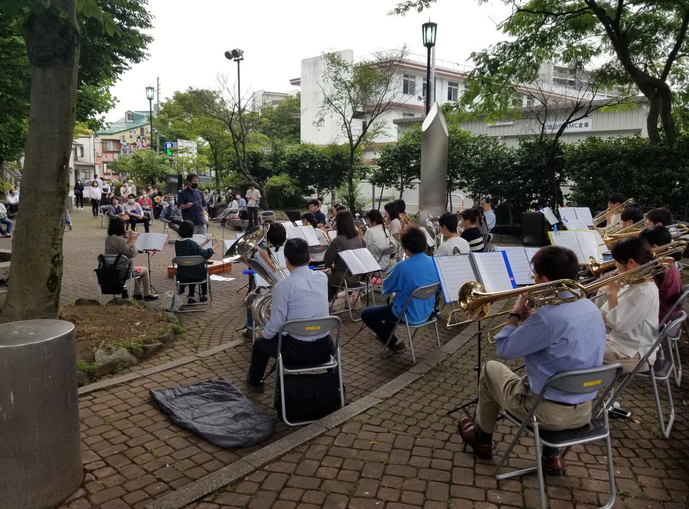
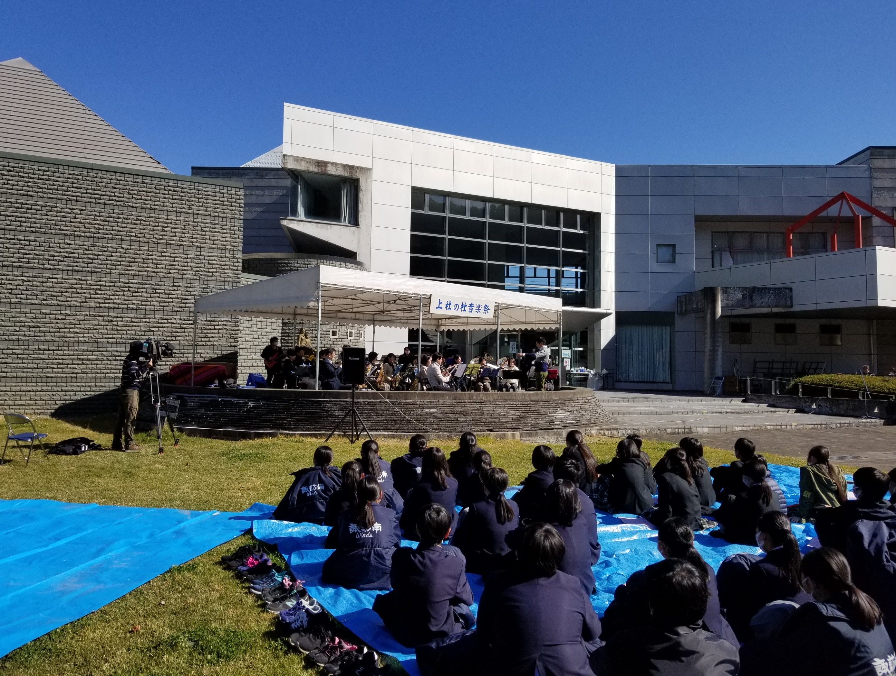

コンサート報告（2021年）
2025年 ｜
2024年 ｜
2023年 ｜
2022年
2021年 ｜
2020年 ｜
2019年 ｜
2018年 ｜
2017年
2016年 ｜
2015年 ｜
2014年 ｜
2013年 ｜
2012年
2011年 ｜
2010年 ｜
2009年 ｜
2008年 ｜
2007年
2006年 ｜
2005年 ｜
2004年 ｜
2003年 ｜
2002年
並木DEコンサート出演 演奏終了（2021.6.26）
 本年度第1回の並木DEコンサートに出演させていただきました。感染症対策を行いながらではありますが、昨年は中止した楽器紹介も復活させ、演奏曲数も増やして通常と同様に開催することができました。実行委員会の皆さんのご尽力に厚く御礼申し上げます。
朝から天候が心配されましたが何とか雨は避けられ、予想以上の多くのお客様にお立ち寄りいただきました。懐かしい曲から最近のヒット曲まで演奏しましたが、お楽しみいただけたならうれしいです。今後ともどうぞよろしくお願いいたします。
第27回上社の杜音楽祭 演奏終了（2021.10.24）
 今年も秋晴れの下、諏訪市内中学生の皆さんと屋外での音楽祭を開催することができました。今年は夏場に感染レベルが上がって思うように練習ができず、曲の仕上がりが心配されましたが、当日は楽しく演奏でき、感謝しております。中学生の皆さんも、演出を加えた楽しい熱演を披露していました。
一切宣伝しなかったにもかかわらず、多くのお客様にご来場いただき、誠にありがとうございました。
第27回定期演奏会 演奏終了（2021.12.5）
当団最大の行事、定期演奏会。今年は感染症対策を徹底の上、新聞や案内状で一般のお客様にも開催をお知らせし、事前登録での入場をお願いしました。ご来場のお客様には大変お手数をおかけしました。また開催の数日前に満席となり、ご来場をお断りしたお客様も出てしまいました。誠に申し訳ありませんでした。
ステージでも、例年よりは演出などを控えめにしたものの曲数は例年と同じとし、できるだけ通常に近い形で開催することができました。多くの方々のご協力に、心より御礼申し上げます。
千鳥配置ながらほぼ満席に見える会場で、私たちも楽しく演奏することができました。なかなか思うように活動できなかった2021年ですが、定期演奏会で締めくくることができたこと、大変うれしく思っております。
来年もこの諏訪地域に、楽しい音楽をお届けしたいと思っております。今後とも諏訪市吹をどうぞよろしくお願いいたします。